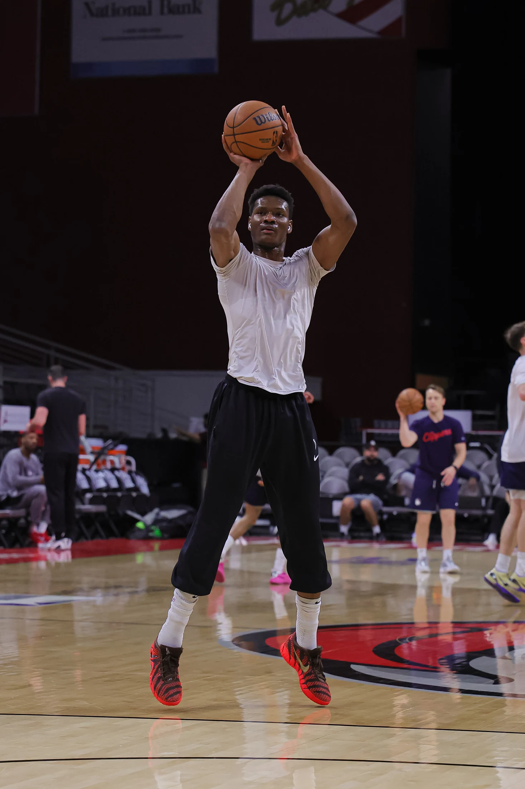

I grew up in Ughelli, Delta State, competing in track and field before basketball became my direction. The athleticism came naturally, but the game gave it purpose. Camps helped me sharpen that raw ability and opened my eyes to how far discipline could take me.
02 / Career
A global
game.
A career built on preparation, adaptability, and the pursuit of progress.
Follow the journey
The journey so far
I earned a scholarship to NBA Academy Africa in Senegal during the academy's inaugural year. Months later, I moved to Canberra to train at the NBA Global Academy. Competing against leading international prospects taught me to adapt quickly and measure myself against a global standard.
NBA Academy scholarshipAcross two seasons at Washington State, I built my identity around energy, rebounding, rim protection, and consistency. I earned Pac-12 All-Freshman honors in my first year and Pac-12 All-Defensive honorable mention as a sophomore, finishing my college career with 102 blocks.
Pac-12 honors · 102 career blocksOfficial player profile ↗I became the first NBA Academy Africa alumnus to sign with NBA G League Ignite. My time with the Rio Grande Valley Vipers gave me a larger role and the responsibility that came with starting regularly. Playing within the Houston Rockets organization challenged me to become more dependable on both ends of the floor, expand my range, and make an impact beyond athleticism. Helping the Vipers reach the 2026 Western Conference Semifinals added valuable playoff experience to that growth.
First NBA Academy Africa alumnus to join Ignite · G League playoffsOfficial G League profile ↗Joining Denver's 2026 NBA Summer League roster gave me a new stage to compete within an NBA organization. It was an opportunity to bring together everything I had developed and show the player I had become.
NBA Summer League · Las VegasOfficial Denver roster ↗Olympic Training Camp
My first senior national-team call-up came in 2021, when I joined D'Tigers' Olympic training camp ahead of Tokyo. Although I was not selected for the final Olympic roster, the camp gave me my first experience inside Nigeria's senior national-team program.
View 2021 camp announcement ↗World Cup Qualifiers
I have now been selected to Nigeria's 12-man D'Tigers roster for the fourth window of the 2027 FIBA Basketball World Cup African Qualifiers in Tunisia. Representing my country at senior level marks a defining step in my career as we prepare to face Cameroon, South Sudan, and Cape Verde.
Current selection · August 2026View official roster release ↗My career continues with Monbus Obradoiro as the club returns to Liga Endesa for the 2026-27 season. I am stepping into one of Europe's strongest domestic leagues, ready to learn a new style of basketball, contribute at a high level, and keep pushing my game forward.
Current chapter · 2026–27Official club site ↗